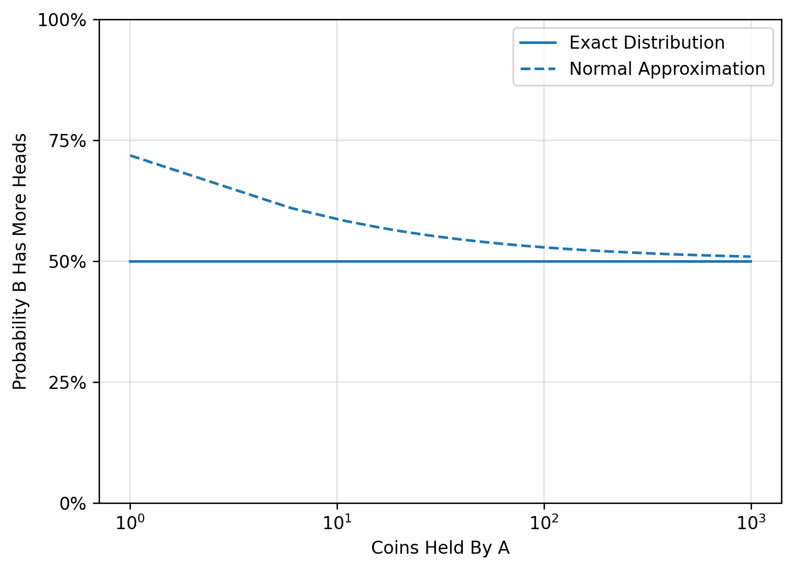

I’m about to do some interviews this week which got me reflecting on some of my favorite questions I’ve been asked. Usually, these are little toy problems you’d find in an intro to probability textbook, but they can be pretty fun and rewarding to solve.
Question 1
Person A has \(n\) fair coins, and person B has \(n+1\) fair coins. They each can flip all their coins simultaneously. What is the probability that person B gets more heads? Provide your answer as a function of \(n\).
Answer
I actually took the liberty of editing this question (the function of \(n\) was not included). Anyway, this is pretty simple. Suppose \(n\) is large enough to justify using a normal approximation. Then
\[ A \sim \operatorname{normal}\left( \dfrac{n}{2}, \dfrac{n}{4} \right) \>,\]
\[ B \sim \operatorname{normal}\left( \dfrac{n}{2}, \dfrac{n}{4} \right) \>.\]
We’re interested in \(\Pr(B \gt A) = \Pr(B - A \gt 0)\). So let \(D=B-A\). Then \(D\) has the following distribution
\[ D \sim \operatorname{normal}\left( \dfrac{1}{2}, \dfrac{2n+1}{4} \right) \>.\]
Now, we just need to make a standardized normal random variable and pass it through the CDF of a gaussian. That turns out to be
\[ Z = \dfrac{0-\frac{1}{2}}{\sqrt{\frac{2n+1}{4}}} = \dfrac{-1}{\sqrt{2n+1}} \]
I’m not sure what the interviewer expectedf, but we can see that the probability approaches 1/2 as \(n \to \infty\).
Now, this might be a “good ’nuff” answer, but it relies on an approximation that breaks down for small \(n\). What is the REAL answer?
For that, we need to use convolution. If \(D=B-A\) then \(D\) can take on integer values between \(-n\) (where B flips 0 heads and A flips \(n\)) and \(n+1\) (where B flips \(n+1\) heads and A flips 0).
with the added stipulation that \(\Pr(A>n) = 0\). Ok, not a fun sum to do by hand, let’s cook up a numpy function
import numpy as npimport matplotlib.pyplot as pltfrom scipy.stats import binom, normimport matplotlib.patches as patchesimport pandas as pdimport itertoolsdef f(k:int, n:int): i = np.arange(1, n+2).reshape(-1, 1) density = binom(n=n+1, p=0.5).pmf(i)*binom(n=n, p=0.5).pmf(i-k)return density.sum()def approx_f(n): z =-1/ np.sqrt(2*n+1) return1- norm.cdf(z)max_coins =1000coins = np.arange(1, max_coins+1, 5)probs = np.zeros(coins.size)probsfor i, n inenumerate(coins): outcomes = np.arange(1, n+2) proba = f(outcomes, n) probs[i] = probafig, ax = plt.subplots(dpi =120)ax.plot(np.log10(coins), probs, label ='Exact Distribution', color='C0')ax.plot(np.log10(coins), approx_f(coins), label ='Normal Approximation', color ='C0', linestyle='dashed')ax.set_ylim(0, 1)ax.grid(True, color='lightgray', linestyle='-', linewidth=0.5)ax.yaxis.set_major_formatter(plt.FuncFormatter(lambda x, _: f'{x*100:.0f}%'))ax.set_yticks([0, 0.25, 0.5, 0.75, 1])ax.set_xlabel('Coins Held By A')ax.set_ylabel('Probability B Has More Heads')# Set x-ticks to be 10^xdef log_format(x, pos):returnf'$10^{{{int(x)}}}$'ax.set_xticks([0, 1, 2, 3])ax.xaxis.set_major_formatter(plt.FuncFormatter(log_format))ax.legend()

In fact, it looks like the probability is always 0.5, which is interesting. Let’s see why.
Credit to Misha Lavrov for showing me this very simple and elegant solution. Again, let \(D - B-A\), but now instead focus on \(D+n = B + (n-A)\) which is the number of heads from \(B\) plus the number of tails from \(A\). Since the coins are fair, this is the sum of two binomials with \(2n+1\) trials. Hence, the probability mass function is